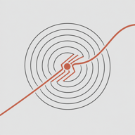

Patchable monosynth

PLICATA
A compact analog-style voice built for hands-on synthesis: oscillator and interval sub, audio-rate modulation, ladder filtering, a CV-driven wavefolder and an open patch system.
A morphing oscillator, interval SUB, wavefolder and resonant filter form the voice. The 28-socket patch field opens audio, CV and events; the XY keyboard adds microtonal performance, and the 32-step arpeggiator turns held notes into programmable, mutable patterns.
- Morphing oscillator + interval SUB
- Wavefolder + resonant ladder filter
- 28-socket audio / CV / event patch field
- Microtonal XY performance keyboard
- 32-step arpeggiator + scenes + mutation
Desktop VST3 + standalone for Mac and Windows: Get the desktop version · Watch the Ableton Live demo
PLICATA video demonstrations: Official 60s demo · Patching Plicatas · Hands-on demo.
Available now
- Runs on
- iPhone iPad
- Formats
- Standalone AUv3
- Beta
- Android
- Coming
- VST3 · Windows + macOS